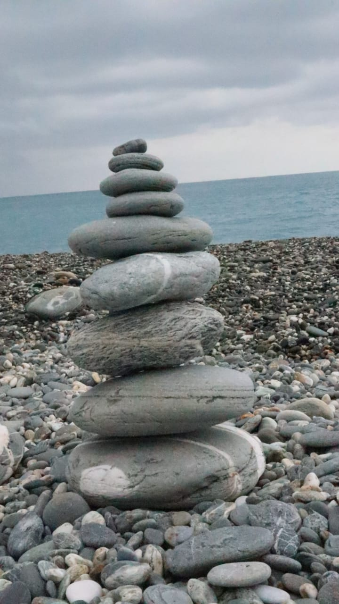
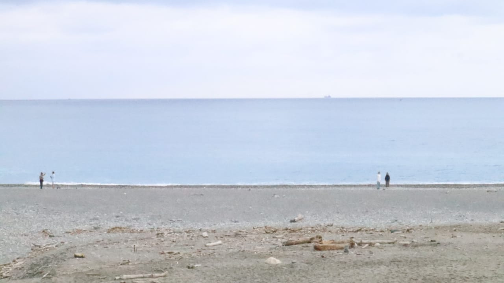
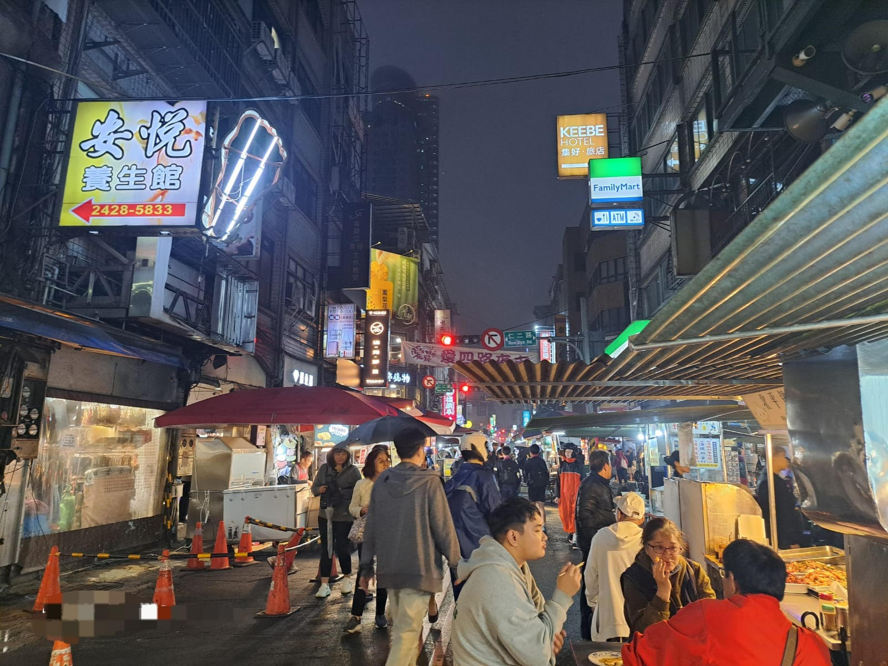

Instruksi Tugas IPS
1. Pilih satu artefak di National Palace Museum dan jelaskan apa yang artefak tersebut ungkapkan tentang kehidupan masyarakat pada zamannya!
Salah satu artefak di National Palace Museum adalah Jadeite Cabbage dari Dinasti Qing. Artefak ini melambangkan kesucian dan kesuburan, menunjukkan pentingnya nilai keluarga dan harapan akan banyak keturunan pada zaman itu.
2. Lakukan wawancara dengan pemandu untuk mengetahui contoh peninggalan masyarakat masa awal yang masih banyak digunakan masyarakat Taiwan hingga saat ini!
Kotak yang pada zaman dulu digunakan sebagai kotak pensil raja, menjadi kotak kue bulan di zaman sekarang.
3. Lakukan investigasi di Chisingtan Scenic Area, Hualien, untuk mengetahui mengenai riwayat penduduk dalam berdagang dan memenuhi kebutuhan mereka!
Penduduk di sekitar Chisingtan dulu hidup dari perikanan, bertani, dan berdagang hasil laut. Daerah ini dulunya adalah pelabuhan kecil di mana nelayan menjual hasil tangkapan ke pasar lokal. Sekarang, wilayah ini menjadi tujuan wisata, tapi sejarah perdagangan lautnya masih dikenang melalui museum dan cerita masyarakat lokal.


4. Berfotolah bersama kelompok dan gunakan latar belakang aktivitas wisatawan di Keelung Night Market!


5. Wawancara dengan salah satu wisatawan domestik atau melalui pemandu tentang tradisi yang masih nampak di sepanjang destinasi tersebut!
Budaya seperti pertunjukan barongsai saat perayaan, penghormatan kepada para pendahulu, dan pemakaian lampion masih mudah ditemukan di berbagai tempat wisata. Wisatawan lokal juga sangat tertarik dengan riwayat kuil kuno yang masih dimanfaatkan untuk upacara dan perayaan keagamaan.
6. Jadilah bagian dari masyarakat di beberapa destinasi dengan meluangkan waktu meluangkan wawancara serta melakukan observasi untuk mencari informasi berikut:
- Kondisi Sebagian Besar Bangunan:
Hualien berada di daerah yang sering terjadi gempa. Tahun lalu di bulan April tahun 2024 terjadi gempa besar yang menyebabkan kerusakan kepada bangunan-bangunan di Kota Hualien bahkan beberapa bangunan runtuh.
- Cara Masyarakat Merawat Masa Lalu:
Mereka memiliki museum National Palace Museum untuk menyimpan dan merawat benda-benda peninggalan sejarah.
- Tata Kota Area Destinasi:
Kota Hualien adalah pusat utama di wilayah ini, terletak di pesisir Timur Taiwan yang ditengah pegunungan dan Samudra Pasifik.
- Interaksi Antar-Generasi:
Di Taiwan, hubungan antar anggota keluarga dari generasi berbeda (kakek-nenek, orang tua, anak) di Hualien cukup erat.
- Kepercayaan / Keyakinan Masyarakat:
Kehidupan beragama di Hualien sangat beragam. Mayoritas penduduknya menganut Taoisme, Buddhisme, dan keyakinan adat Tionghoa. Kemudian, ada juga komunitas Kristen dan Katolik.